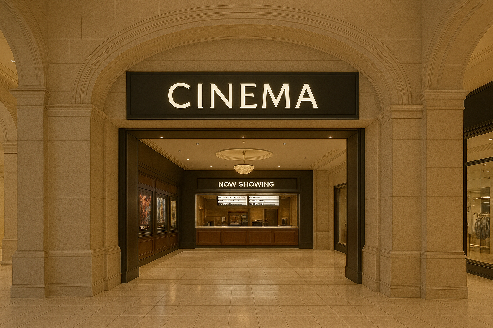
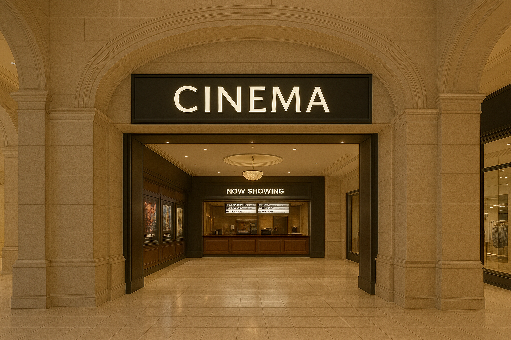
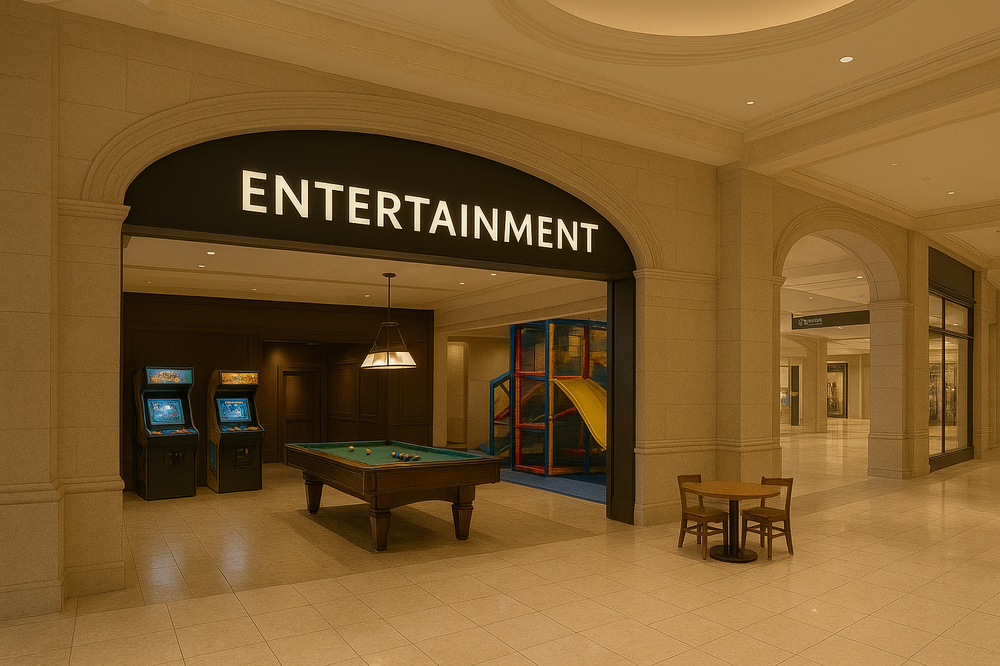
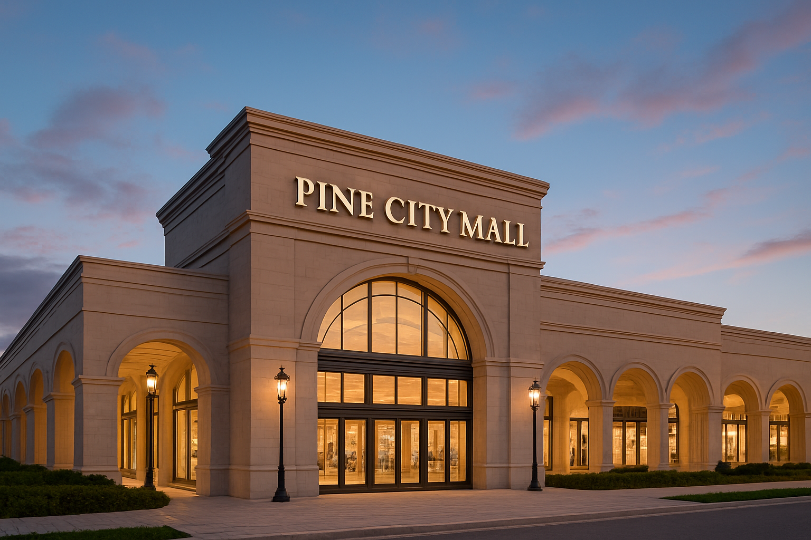
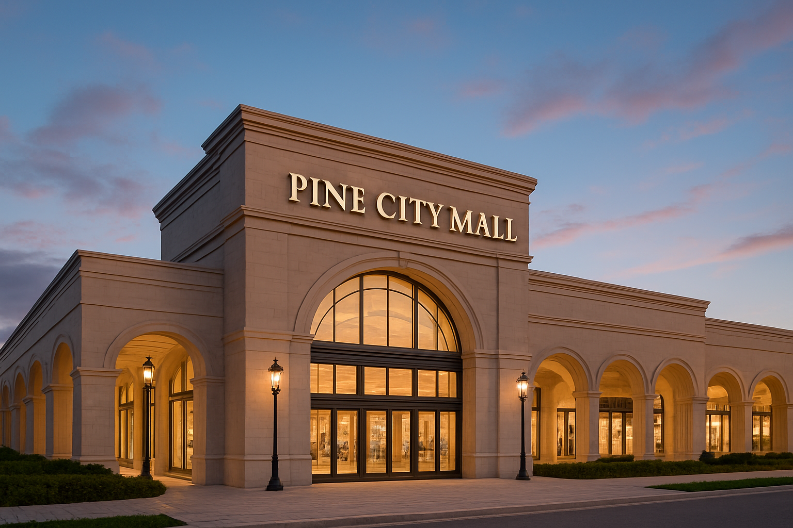

Pine City Mall is where timeless elegance meets modern luxury. Designed with a refined architectural vision, the mall offers a sophisticated shopping and lifestyle experience for visitors seeking the very best in fashion, dining, entertainment, and leisure.
Pine City Mall brings together a curated selection of high-end retail brands, exclusive boutiques, and lifestyle stores—all housed within a beautifully designed space featuring classical arches, warm lighting, and premium finishes. From luxury fashion to fine jewelry and home décor, every store is chosen to reflect quality and distinction.
Whether you're in the mood for casual outdoor dining, gourmet restaurants, or artisanal cafés, Pine City Mall offers a diverse range of culinary experiences. Guests can enjoy alfresco meals on our elegant terrace or explore unique flavors from around the world inside our dining precinct.
Beyond shopping, Pine City Mall is a vibrant center for entertainment. Our cinema showcases the latest films in a luxurious setting, while curated entertainment zones—including arcades, play areas, and leisure lounges—offer enjoyment for families and guests of all ages.
Pine City Mall serves as a premier destination for locals and visitors alike. From special events and seasonal celebrations to exclusive launches and promotions, the mall is a hub for community connection and elevated experiences.
 
